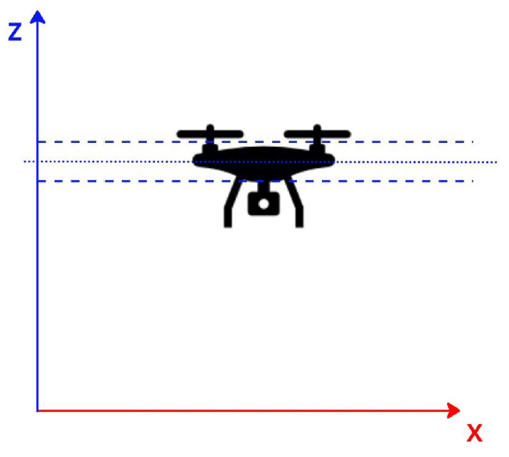

Controle Proporcional
Introdução ao Controle
O controle é uma disciplina fundamental da engenharia que lida com a gestão dinâmica dos sistemas para que eles se comportem de maneira desejada. A essência do controle está em monitorar e ajustar automaticamente a operação de sistemas, desde simples dispositivos mecânicos até complexas redes de comunicação e sistemas robóticos.
O princípio básico é regular as variáveis de um sistema mantendo-as próximas a um valor desejado ou setpoint. Isso é feita através do calculo do erro entre o valor desejado e o valor medido da variável controlada, e então aplicando ações corretivas para minimizar esse erro.
Tipos de Controle
Existem dois tipos principais de controle: o controle em malha aberta e o controle em malha fechada:
-
Controle em Malha Aberta: Não há feedback do processo. As ações de controle são baseadas em um conjunto pré-definido de instruções que não se alteram em resposta ao estado atual do sistema. Um exemplo simples seria um forno elétrico programado para ficar ligado por um tempo determinado, independentemente da temperatura real dentro do forno.
-
Controle em Malha Fechada (ou Controle com Feedback): Usa o feedback do estado atual do sistema para tomar decisões de controle. Este tipo de controle é mais adaptativo e pode corrigir desvios em relação ao setpoint. Um exemplo seria adicionar um termostato ao forno elétrico para desligá-lo quando a temperatura desejada for atingida.
Controle Proporcional (P)
Um dos métodos mais simples e amplamente utilizados no controle em malha fechada é o controle proporcional. Este método ajusta a saída do controlador de forma proporcional à diferença (erro) entre o valor desejado (setpoint) e o valor medido da variável controlada. O coeficiente que determina a relação entre o erro e a ação de controle é conhecido como ganho proporcional (K_p). Portanto uma ação de controle proporcional é dada pela seguinte equação:
Ação de Controle = K_p * erro
Na esqueção acima, podemos ver que a ação de controle é proporcional ao erro. Se o erro for grande, a ação de controle será grande. Se o erro for pequeno, a ação de controle será pequena. Portanto no exemplo do forno elétrico, ao ligar o forno frio, o erro será grande e a ação de controle será grande, aumentando a potência do forno e elevando a temperatura rapidamente. À medida que a temperatura se aproxima do setpoint, o erro diminui reduzindo a potência do forno, evitando que a temperatura ultrapasse o setpoint drasticamente.
Resposta da Ação de Controle
Outros conceitos importantes no controle são a resposta da ação de controle e o conceito de estabilidade. A resposta da ação de controle é a reação do sistema à ação de controle. Se a resposta for muito lenta, o sistema pode não atingir o setpoint ou pode crescer indefinidamente, levando o sistema a um estado instável. Se a resposta for muito rápida, o sistema pode ultrapassar o setpoint e oscilar em torno dele. Portanto, é importante ajustar o ganho proporcional para obter uma resposta rápida e estável.
Exemplo de Controle Proporcional
A seguir, um simulador simples de controle proporcional. Um drone tenta manter uma altitude desejada (o alvo). A cada atualização, o controlador mede a altitude, calcula o erro (alvo − altitude) e pede ao drone uma velocidade de subida ou descida proporcional a esse erro. Aqui você pode ajustar o ganho proporcional (K_p) e ver como ele muda a resposta do drone.
A figura abaixo ilustra o sistema:

Em todo o simulador, o controle P é o que está ligado por padrão. É ele que você vai usar para centralizar um alvo na imagem (Segue Linha) e na APS 7.
Exemplo: Controle Proporcional de Altitude em um Drone
Mexa nos controles abaixo e observe três coisas no gráfico: o alvo (altitude desejada), a resposta (altitude do drone) e o erro (alvo − altitude).
Experimentos prontos: cada botão carrega um Kp e um dt (só P, sem limites, sem carga). Descubra o que acontece em cada um.
Desligado por padrão: sem limites, o comando pode ser tão grande quanto Kp × erro e a altitude pode ficar negativa (valor do modelo matemático, sem chão). Ligado, fica mais realista, mas os limites podem esconder o que o controle está fazendo.
Mais opções do cenário
O que este simulador simplifica
- O drone só sobe e desce (uma dimensão), sem ruído de sensor.
- O controlador pede uma velocidade e a mantém até a próxima atualização (a cada dt). O drone leva cerca de 1 s para alcançar a velocidade pedida (inércia).
- Por padrão não há limites: o comando pode ser tão grande quanto Kp × erro e não existe chão. Assim dá para ver, sem disfarce, se a oscilação diminui, fica do mesmo tamanho ou cresce. Nesse modo a altitude pode ficar negativa: leia esse valor como um desvio no modelo matemático, não como algo que um drone real faria.
- Com limites físicos ligados, o comando fica entre −limite e +limite e o drone para no chão (0 m). É mais realista, mas os limites podem segurar uma oscilação que, sem eles, cresceria. Isso não torna o controle estável.
- Se a altitude se afastar do alvo mais de 100 vezes o valor do alvo, a simulação é interrompida e o gráfico mostra a curva só até ali. Esse corte protege a página; não é um limite do drone.
- A carga (ou vento) é uma velocidade constante para baixo.
Atenção
Os números do simulador (alvo, Kp, limite de velocidade) valem só para este drone de mentirinha. No robô real, comece com ganhos pequenos e respeite os limites de velocidade da atividade (por exemplo, ±0,5 rad/s na velocidade angular do Segue Linha).
Perguntas para explorar
Use o simulador para investigar. Anote o que você observou no gráfico e no quadro de resultado. Aqui não há gabarito: discuta com a sua dupla.
- Com os valores iniciais, suba o Kp aos poucos. O que muda no tempo para chegar perto do alvo? E no quanto o drone passa do alvo?
- Agora desça o Kp até valores bem pequenos. O que muda?
- O que acontece com Kp = 0?
- Carregue os Experimentos A, B e C. Em cada um, a oscilação diminui, fica do mesmo tamanho ou cresce? O que no gráfico mostrou isso?
- Parta do experimento em que a oscilação fica do mesmo tamanho e mude o Kp só um pouco, para cima e para baixo (use o campo de valor exato). O que acontece?
- Escolha um Kp e mude só o dt. O que acontece com a resposta? Existe um Kp que funciona com um dt e deixa de funcionar com outro?
- Quando o erro fica negativo, para que lado o comando manda o drone? Como isso aparece no Segue Linha?
- Ligue os limites físicos em um caso em que a oscilação cresce. O que muda no gráfico? O que o quadro de resultado diz sobre o mesmo ajuste sem limites?
- Em ‘Mais opções do cenário’, coloque uma carga. O drone chega exatamente no alvo? O que muda quando você aumenta o Kp?